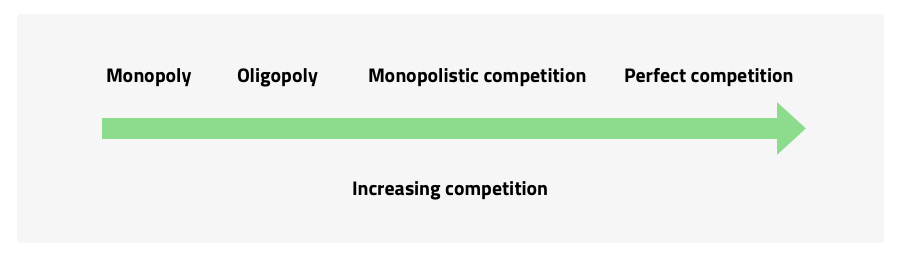

Market structures

Market structures can be categorised as follows:
- Perfect competition – is largely ‘theoretical’ and rarely found in business. Each business operating in the specific market is referred to as a price taker as they have no individual influence on the price at which the goods or services produced are sold.
- Monopoly – those businesses which have managed to gain complete control of the market operate in a pure monopoly market structure. This represents the opposite of perfect competition as the market is comprised of only one business organisation. This position of dominance is maintained through the use of barriers to entry which limit the ability of rivals to enter the market. Any industry can be defined as a monopoly if one of the firms competing in that industry controls more than 25% of the market. Having such a large share of the market lends the firm the ability to price discriminate which involves charging different prices for what is the essentially the same good or service, eg an Internet provider charges different prices for different levels of service. Prior to deregulation, public utilities in the UK were examples of monopolies, eg BT and Southern Water. Monopolies are regarded as dangerous for the consumer as the firms involved have the ability to overcharge. Their practices are regulated in the UK by the Competition and Markets Authority.
- Oligopoly – an oligopoly is a market which is made up of a few large firms. The firms operating in this type of market structure sell similar goods or services and are referred to as price shapers, ie they have some control over the prices charged to customers. In the UK, although there are six large firms which dominate the energy market (Ofcom, 2017), with over 78% of consumers, there are lots of other businesses operating in the same sector.
- Monopolistic competition – this type of market structure exhibits features of both monopoly and perfect competition. It is ‘competitive’ in the sense that there are a large number of firms and there is freedom of entry into the market. Each business produces goods or services that are slightly different and this allows them to have greater control over pricing, market share and profits. The product differentiation feature of this type of market is what makes it monopolistic in nature. As in oligopoly, monopolistic competitive businesses are referred to as price shapers, ie they have some degree of control over the price at which goods or services are sold. Product differentiation encourages a degree of brand loyalty amongst customers and this makes the demand for the good/service effectively more inelastic.
Each of the above market types have two main differences:
- The amount of competition that exists between the businesses involved in the market.
- The level to which the business determines the price of the good or service it produces.
The competitiveness of each market type is illustrated below:
Competition increases left to right, with monopoly the least competitive and perfect competition the most.
- Market structure is determined by the amount of competition and control over pricing exercised by firms.
- Businesses that operate in perfectly competitive markets are called price takers as they have no control over the price charged. These markets are rarely seen in the real business world.
- Businesses that operate in monopolistic markets are called price makers. This is because they have full control over prices charged.
- Businesses that operate in oligopolistic and monopolistically competitive markets are called price shapers as they have some control over prices charged.
- In oligopoly, prices tend to be stable as businesses fear the loss of market share/revenue which may result from a change in price. The kinked demand curve illustrates this price stability.
- In monopolistic competition, businesses produce goods/services that are slightly different (product differentiation) from those of their competitors. This allows businesses to enjoy greater customer loyalty.